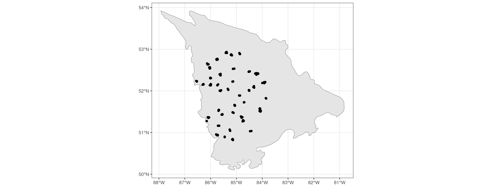
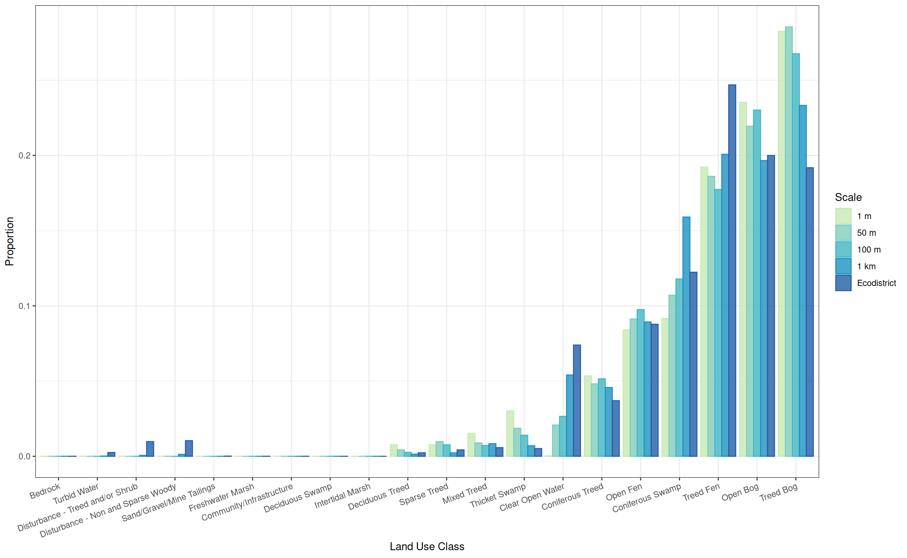
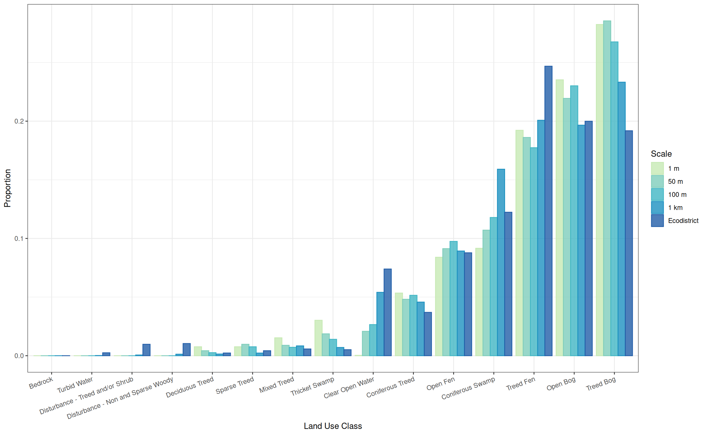

# install.packages("renv")
renv::restore()Land Cover Analysis
Using renv
To reproduce this analysis, make sure to restore the renv environment.
Loading sites data (before 2025)
We load the possible sites (quiet = TRUE is for not displaying verbose loading information).
# NOTE: this is commented out as it is now outdated (pre 2025)
# sites_possible <- sf::st_read(
# "data/sites/GRTS_PossibleCaARU_sample_draw_base.shp",
# quiet = TRUE) |>
# dplyr::mutate(source = "GRTS_PossibleCaARU_sample_draw_base") |>
# dplyr::mutate(fullID = paste(SampleID, ID, source, sep = "_"))
#
# additional_sites <- readr::read_csv("data/sites/Selected_Peat_Sites.csv") |>
# sf::st_as_sf(coords=c("lon_WGS84", "lat_WGS84"), crs = 4326) |>
# sf::st_transform(sf::st_crs(sites_possible)) |>
# dplyr::mutate(source = "Selected_Peat_Sites") |>
# dplyr::mutate(fullID = paste(SampleID, ID, source, sep = "_"))
#
# all_sites <- sites_possible |>
# dplyr::bind_rows(additional_sites)Loading the ecodistict and land cover data
We load the ecodistrict polygons. We use its crs to reproject the new data as well. We also load the two halves of the far north land cover dataset, along with the the attribute table of land cover classes. Finally we load the ecodistrict data and select for the relevant lowlands disctrict, coded as 1028.
ecodistrict <- sf::st_read(
"data/ecodistrict_shp/Ecodistricts/ecodistricts.shp",
quiet = TRUE) |>
dplyr::filter(ECODISTRIC == 1028)
lu_16 <- raster::raster("data/land_use/FarNorth_LandCover_Class_UTM16.tif")
lu_17 <- raster::raster("data/land_use/FarNorth_LandCover_Class_UTM17.tif")
lu_dat <- readr::read_csv("data/land_use/attr_table_northen_ont_lc.txt") |>
dplyr::mutate(cats = as.factor(code))Loading the sites data (2025)
We load the possible sites. Using the new 2025 sites:
all_new_sites <- readr::read_csv("data/sites/All Posssible Peat Sites 2025 2.0.csv") |>
sf::st_as_sf(coords=c("x", "y"), crs = 4326) |>
sf::st_transform(crs = sf::st_crs(ecodistrict)) |>
dplyr::mutate(source = "2025_peat_sites") |>
dplyr::mutate(fullID = paste(OBJECTID, SampleID, source, sep = "_"))
# Check that all points are in Ecodistrict 1028
stopifnot(all(all_new_sites$Ecodistric == 1028))Plotting spatial data
It is always a good idea to try and plot spatial data before any processing.
ggplot() +
geom_sf(data = ecodistrict) +
geom_sf(data = sf::st_transform(all_new_sites,
sf::st_crs(ecodistrict))) +
theme_bw()
Plotting the land cover data is difficult because it is provided is two different UTMs.
Extracting Land Cover data
The following functions will take care of land cover extraction for sites.
extract_from_points <- function(scale_m, sites, lu) {
sites_buffer <- sites |>
sf::st_transform(sf::st_crs(lu)) |>
sf::st_buffer(dist = scale_m) |>
dplyr::select(fullID)
extr <- exactextractr::exact_extract(lu, sites_buffer,
progress = FALSE,
include_cols = "fullID")
extr <- mapply(extr, 1:length(extr),
FUN = \(x, y) dplyr::mutate(x, id = y),
SIMPLIFY = F)
extr_df <- do.call(rbind, extr) |>
dplyr::filter(!is.na(value)) |>
dplyr::relocate(id)
return(extr_df)
}
compute_land_cover <- function(scale_m, sites,
lu_16, lu_17, lu_dat,
summarise_all = TRUE) {
extr_16_df <- extract_from_points(scale_m, sites, lu_16)
extr_17_df <- extract_from_points(scale_m, sites, lu_17)
stopifnot(all(!(extr_16_df$siteID %in% extr_17_df$siteID)))
extr <- rbind(extr_16_df, extr_17_df) |>
dplyr::arrange(id, value)
if (summarise_all) {
extr_table <- extr |>
dplyr::group_by(value) |>
dplyr::summarise(coverage_fraction_sum = sum(coverage_fraction)) |>
dplyr::mutate(prop =
coverage_fraction_sum/sum(coverage_fraction_sum)) |>
dplyr::ungroup() |>
dplyr::mutate(value = as.factor(value)) |>
dplyr::left_join(lu_dat, by = c("value" = "cats")) |>
dplyr::select(category_code, prop, label)
} else {
extr_table <- extr |>
dplyr::group_by(fullID, value) |>
dplyr::summarise(coverage_fraction_sum = sum(coverage_fraction)) |>
dplyr::mutate(prop =
coverage_fraction_sum/sum(coverage_fraction_sum)) |>
dplyr::ungroup() |>
dplyr::mutate(value = as.factor(value)) |>
dplyr::left_join(lu_dat, by = c("value" = "cats")) |>
dplyr::select(fullID, category_code, prop, label)
}
extr_table[is.na(extr_table)] <- 0
return(extr_table)
}We extract at different scales (buffer radius around points): 1 m, 50 m, 100 m and 1 km.
res_points <- mapply(FUN = compute_land_cover,
c(`1 m` = 1, `50 m` = 50,
`100 m` = 100, `1 km` = 1000),
MoreArgs = list(
sites = all_new_sites,
lu_16 = lu_16, lu_17 = lu_17, lu_dat = lu_dat),
SIMPLIFY = F) |>
dplyr::bind_rows(.id = 'scale') |>
dplyr::mutate(scale = forcats::fct_relevel(scale, "1 m", "50 m",
"100 m", "1 km"),
label = forcats::fct_reorder(label, prop)) |>
dplyr::arrange(scale, dplyr::desc(prop))
knitr::kable(res_points)| scale | category_code | prop | label |
|---|---|---|---|
| 1 m | TrBOG | 0.28 | Treed Bog |
| 1 m | OBOG | 0.24 | Open Bog |
| 1 m | TrFEN | 0.19 | Treed Fen |
| 1 m | ConSWA | 0.09 | Coniferous Swamp |
| 1 m | OFEN | 0.08 | Open Fen |
| 1 m | ConTRE | 0.05 | Coniferous Treed |
| 1 m | ThSWA | 0.03 | Thicket Swamp |
| 1 m | MixTRE | 0.02 | Mixed Treed |
| 1 m | SpTRE | 0.01 | Sparse Treed |
| 1 m | DecTRE | 0.01 | Deciduous Treed |
| 1 m | WAT | 0.00 | Clear Open Water |
| 50 m | TrBOG | 0.29 | Treed Bog |
| 50 m | OBOG | 0.22 | Open Bog |
| 50 m | TrFEN | 0.19 | Treed Fen |
| 50 m | ConSWA | 0.11 | Coniferous Swamp |
| 50 m | OFEN | 0.09 | Open Fen |
| 50 m | ConTRE | 0.05 | Coniferous Treed |
| 50 m | WAT | 0.02 | Clear Open Water |
| 50 m | ThSWA | 0.02 | Thicket Swamp |
| 50 m | SpTRE | 0.01 | Sparse Treed |
| 50 m | MixTRE | 0.01 | Mixed Treed |
| 50 m | DecTRE | 0.00 | Deciduous Treed |
| 100 m | TrBOG | 0.27 | Treed Bog |
| 100 m | OBOG | 0.23 | Open Bog |
| 100 m | TrFEN | 0.18 | Treed Fen |
| 100 m | ConSWA | 0.12 | Coniferous Swamp |
| 100 m | OFEN | 0.10 | Open Fen |
| 100 m | ConTRE | 0.05 | Coniferous Treed |
| 100 m | WAT | 0.03 | Clear Open Water |
| 100 m | ThSWA | 0.01 | Thicket Swamp |
| 100 m | SpTRE | 0.01 | Sparse Treed |
| 100 m | MixTRE | 0.01 | Mixed Treed |
| 100 m | DecTRE | 0.00 | Deciduous Treed |
| 1 km | TrBOG | 0.23 | Treed Bog |
| 1 km | TrFEN | 0.20 | Treed Fen |
| 1 km | OBOG | 0.20 | Open Bog |
| 1 km | ConSWA | 0.16 | Coniferous Swamp |
| 1 km | OFEN | 0.09 | Open Fen |
| 1 km | WAT | 0.05 | Clear Open Water |
| 1 km | ConTRE | 0.05 | Coniferous Treed |
| 1 km | MixTRE | 0.01 | Mixed Treed |
| 1 km | ThSWA | 0.01 | Thicket Swamp |
| 1 km | SpTRE | 0.00 | Sparse Treed |
| 1 km | DecTRE | 0.00 | Deciduous Treed |
| 1 km | NSWood | 0.00 | Disturbance - Non and Sparse Woody |
| 1 km | TrOrSHr | 0.00 | Disturbance - Treed and/or Shrub |
| 1 km | XWAT | 0.00 | Turbid Water |
| 1 km | BED | 0.00 | Bedrock |
We also want to do the same operation for the ecodistrict to allow for comparison. We don’t need to use exact extraction, insteadt the crop and mask each raster. This operation is costly so we write out the rasters and load them again (see unrendered code).
# NOTE: commented out as it is lengthy and intermediate outputs are already present
# ecodistrict_16 <- sf::st_transform(ecodistrict, sf::st_crs(lu_16))
# ecodistrict_17 <- sf::st_transform(ecodistrict, sf::st_crs(lu_17))
#
# lu_16_crop <- raster::crop(lu_16, ecodistrict_16)
# lu_16_crop_mask <- raster::mask(lu_16_crop, ecodistrict_16)
#
# lu_17_crop <- raster::crop(lu_17, ecodistrict_17)
# lu_17_crop_mask <- raster::mask(lu_17_crop, ecodistrict_17)We can then get the frequencies of values. This operation is also costly so we write out the objects and load them again (see unrendered code).
# NOTE: commented out as it is lengthy and intermediate outputs are already present
# lu_16_freq <- raster::freq(lu_16_crop_mask)
# lu_17_freq <- raster::freq(lu_17_crop_mask)We combine the results of both UTMs.
res_ecodistrict <- rbind(lu_16_freq, lu_17_freq) |>
as.data.frame() |>
dplyr::group_by(value) |>
dplyr::summarise(count = sum(count)) |>
dplyr::ungroup() |>
dplyr::filter(!is.na(value)) |>
dplyr::mutate(prop = count/sum(count)) |>
dplyr::mutate(value = as.factor(value)) |>
dplyr::left_join(lu_dat, by = c("value" = "cats")) |>
dplyr::filter(!is.na(label)) |>
dplyr::select(category_code, prop, label) |>
dplyr::mutate(scale = "Ecodistrict") |>
dplyr::relocate(scale) |>
dplyr::arrange(scale, dplyr::desc(prop))
knitr::kable(res_ecodistrict)| scale | category_code | prop | label |
|---|---|---|---|
| Ecodistrict | TrFEN | 0.25 | Treed Fen |
| Ecodistrict | OBOG | 0.20 | Open Bog |
| Ecodistrict | TrBOG | 0.19 | Treed Bog |
| Ecodistrict | ConSWA | 0.12 | Coniferous Swamp |
| Ecodistrict | OFEN | 0.09 | Open Fen |
| Ecodistrict | WAT | 0.07 | Clear Open Water |
| Ecodistrict | ConTRE | 0.04 | Coniferous Treed |
| Ecodistrict | NSWood | 0.01 | Disturbance - Non and Sparse Woody |
| Ecodistrict | TrOrSHr | 0.01 | Disturbance - Treed and/or Shrub |
| Ecodistrict | MixTRE | 0.01 | Mixed Treed |
| Ecodistrict | ThSWA | 0.01 | Thicket Swamp |
| Ecodistrict | SpTRE | 0.00 | Sparse Treed |
| Ecodistrict | XWAT | 0.00 | Turbid Water |
| Ecodistrict | DecTRE | 0.00 | Deciduous Treed |
| Ecodistrict | MIN | 0.00 | Sand/Gravel/Mine Tailings |
| Ecodistrict | FrMAR | 0.00 | Freshwater Marsh |
| Ecodistrict | BED | 0.00 | Bedrock |
| Ecodistrict | URB | 0.00 | Community/Infrastructure |
| Ecodistrict | DecSWA | 0.00 | Deciduous Swamp |
| Ecodistrict | InMAR | 0.00 | Intertidal Marsh |
And then combine the results between scales and utm.
res <- rbind(res_points, res_ecodistrict) |>
tidyr::complete(scale, label) |>
tidyr::replace_na(list(prop = 0)) |>
dplyr::mutate(label = forcats::fct_reorder(label, prop))For individual site identity, at different scales:
res_points_by_site <-
mapply(FUN = compute_land_cover,
c(`1 m` = 1, `50 m` = 50,
`100 m` = 100, `1 km` = 1000),
MoreArgs = list(
sites = all_new_sites,
lu_16 = lu_16, lu_17 = lu_17, lu_dat = lu_dat),
summarise_all = FALSE,
SIMPLIFY = F) |>
dplyr::bind_rows(.id = 'scale') |>
dplyr::mutate(scale = forcats::fct_relevel(scale, "1 m", "50 m",
"100 m", "1 km"),
label = forcats::fct_reorder(label, prop)) |>
dplyr::group_by(scale, fullID) |>
dplyr::arrange(dplyr::desc(prop)) |>
dplyr::rename(primary_category_code = category_code,
primary_prop = prop,
primary_label = label) |>
dplyr::mutate(secondary_category_code = primary_category_code[2],
secondary_prop = primary_prop[2],
secondary_label = primary_label[2],
prop_sum = primary_prop + secondary_prop) |>
dplyr::slice(1) |>
dplyr::ungroup() |>
dplyr::arrange(fullID)`summarise()` has grouped output by 'fullID'. You can override using the
`.groups` argument.
`summarise()` has grouped output by 'fullID'. You can override using the
`.groups` argument.
`summarise()` has grouped output by 'fullID'. You can override using the
`.groups` argument.
`summarise()` has grouped output by 'fullID'. You can override using the
`.groups` argument.DT::datatable(res_points_by_site)We save this table.
readr::write_csv(res_points_by_site, "outputs/res_points_by_site_2025.csv")Results
We can plot the results with “dodged” ggplot2 barplots.
my_pal <- c('#c7e9b4','#7fcdbb','#41b6c4','#1d91c0','#225ea8','#0c2c84')
ggplot(res) +
geom_bar(aes(x = label, y = prop, fill = scale, colour = scale),
alpha = 0.8,
stat = "identity",
position = "dodge") +
theme_bw() +
theme(axis.text.x = element_text(angle = 20, vjust = 1, hjust = 1)) +
labs(x = "Land Use Class", y = "Proportion",
fill = "Scale", colour = "Scale") +
scale_fill_manual(values = my_pal) +
scale_color_manual(values = my_pal)
Removing the land use classes than are not present around sites, we get a slightly easier graph to read.
only_at_sites <- res |>
dplyr::filter(prop > 0) |>
dplyr::filter(scale != "Ecodistrict") |>
dplyr::pull(label)
res_filt <- res |>
dplyr::filter(label %in% only_at_sites)
ggplot(res_filt) +
geom_bar(aes(x = label, y = prop, fill = scale, colour = scale),
alpha = 0.8,
stat = "identity",
position = "dodge") +
theme_bw() +
theme(axis.text.x = element_text(angle = 20, vjust = 1, hjust = 1)) +
labs(x = "Land Use Class", y = "Proportion",
fill = "Scale", colour = "Scale") +
scale_fill_manual(values = my_pal) +
scale_color_manual(values = my_pal)